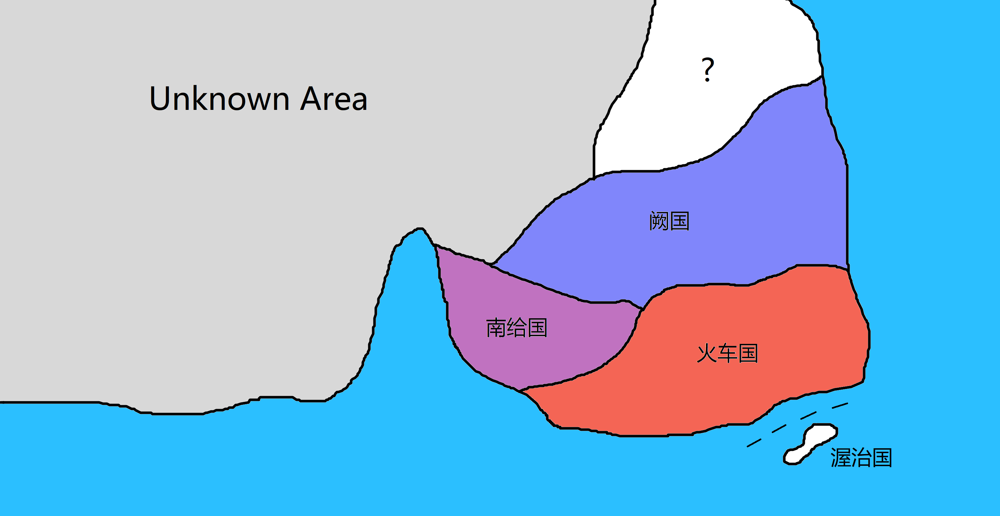
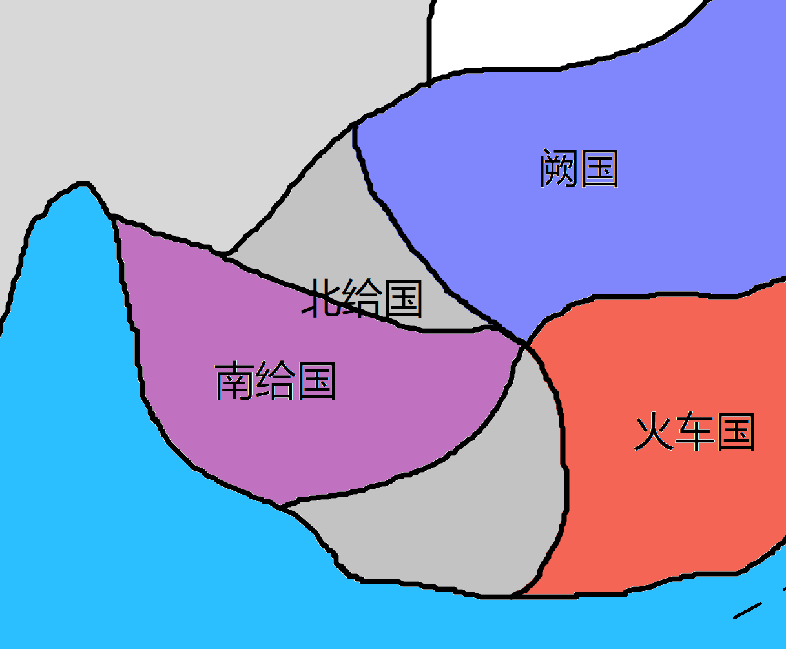

一、基础设定
- 设定大部分沿用《给朝野史》，《喝喝粥传》，《野史支线》。
- 这个世界刚刚进入电气时代，没有人会造半导体。
- 穿越的都是 OIer，
科技树全点偏了。但是计算机还是用 % 造出来了。 - 这个世界存在魔法（下文用 % 表示）。
- % 直接通过大脑进行交互。
- 考虑到穿越者都懂 OI，有很大的 buff。
二、势力介绍
0. 设定
- 势力基本以国家为单位出现。国家基本都是帝制。
- 领导核心基本以 OIer 为主。
- 
1. 给国
1.1 北给(国) 已亡
皇帝/领导者：杨鱼塘（给太祖），余潭阳（给太宗、给哀帝）。
这部分设定请参考《给朝野史》。
疆域：

1.2 南给(国)
- 领导者（开国者）：余塘妍
- 皇帝：杨天佑、杨一条
- 原先采用帝制，实际采取八年任期的
帝制（皇帝轮流做） - 采取科举制度。
2. 阙国
- 皇帝/领导者：阙斯特
- 建筑材料：铜（由于众所周知的原因，这种材料在阙国非常丰富）
- 文化：毛良教
3. 火车国
- 皇帝/领导者：火车司机（火车王）
- 《利利亚条约》：是拉夫缇与乐理央签订的，具体内容是火车国以能源（主要是电）和渥治岛交换科技（主要是生物方面）。
4. 其他势力
4.1 渥治岛(国)
- 皇帝/领导者：乐理央
- 主要由渥治岛与东海龙宫组成
4.2 叉义叉
- 当前时间线正在准备进入太阳系
4.3 斯萪
- 当前时间线正在茵丝茂丝
三、特殊设定
太阳花（圣花）必须露天放置（夜晚也要），这是从北给国以来延续的传统。
穿越者：
杨鱼塘
阙斯特
小俄猫
锐二
圣马东冬
叉义叉
斯萪（♀）
乐理央（♀）
孝云藩
克里姆
拉夫缇
季俊子
杰茜德（♀）
…